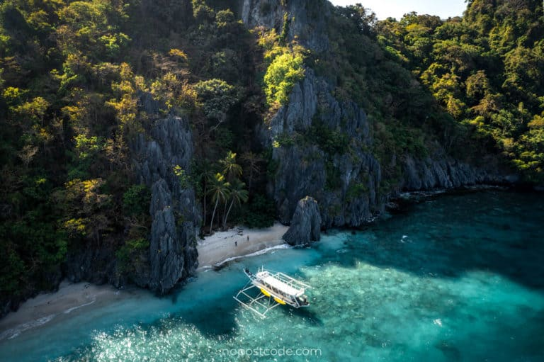
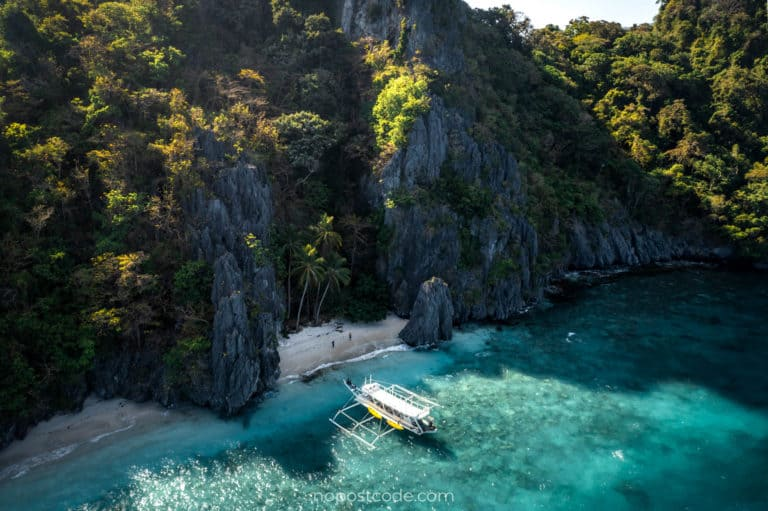
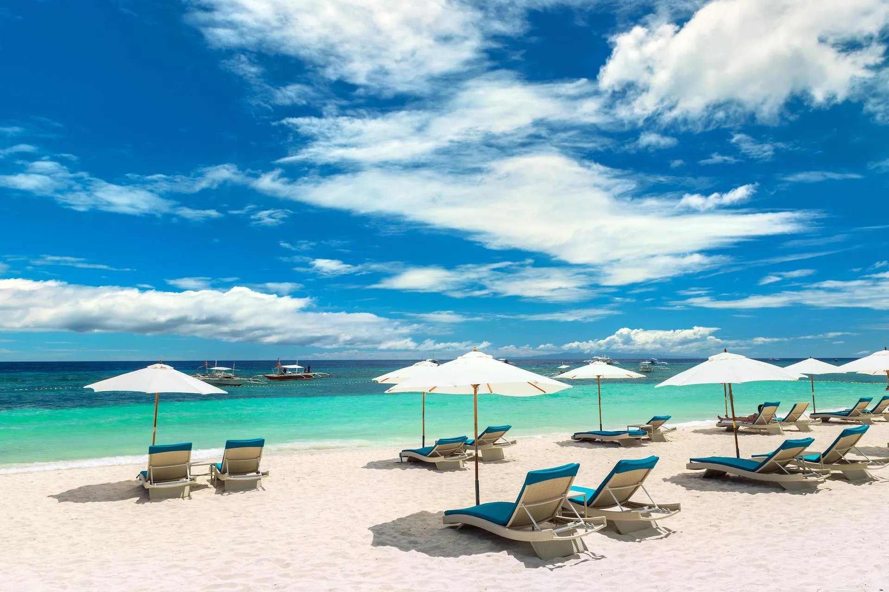
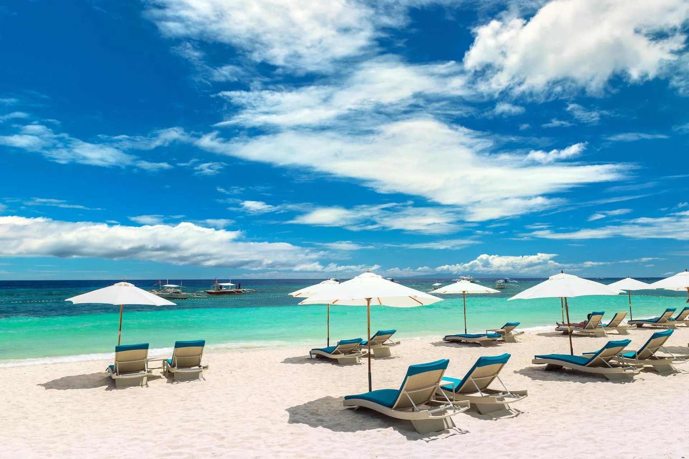

.webp)
.webp)
.webp)
White Beach – Boracay
White Beach is the crown jewel of Philippine tourism, famous for its soft white sand, clear blue water, and breathtaking sunsets. Divided into Stations 1–3, the beach offers both luxury and adventure.
Explore the most breathtaking beaches in the Philippines.
Discover the world’s most stunning beaches — turquoise waters, white sands, and unforgettable sunsets.
White Beach is the crown jewel of Philippine tourism, famous for its soft white sand, clear blue water, and breathtaking sunsets. Divided into Stations 1–3, the beach offers both luxury and adventure.


Nacpan Beach is known for its 4 km stretch of golden sand, palm trees, and clear blue waters. Peaceful and scenic, it’s one of El Nido’s most stunning natural spots.
 

Entalula Beach is a secluded paradise surrounded by dramatic cliffs and crystal-clear water — perfect for relaxation and photography.
 


Alona Beach combines white sand beauty with exciting nightlife and diving opportunities. It’s a top destination in the Visayas region.


Cloud 9 is the surfing capital of the Philippines, famous for its perfect waves and relaxed island atmosphere.

A secluded beach with soft white sand and gentle waves, Paradise Beach lives up to its name as a peaceful getaway on Bantayan Island.

Known for its laid-back atmosphere and island-hopping tours, Port Barton is a quiet beach town nestled between El Nido and Puerto Princesa.

Saud Beach is known for its long stretch of fine sand and crystal-clear waters, often dubbed “the Boracay of the North.”

Dahican Beach is a 7-km stretch loved by skimboarders, surfers, and turtle watchers — a must-see in Mindanao.

White Island is a shifting sandbar just off Camiguin’s coast, offering panoramic views of Mt. Hibok-Hibok and crystal-clear waters.
.webp)
A small island with white sand and turquoise water, Canigao is perfect for day trips and snorkeling adventures.

Sta. Cruz Island is famous for its naturally pink-tinted sand caused by crushed red corals — a rare gem in the Philippines.


Balabac is a remote paradise of sandbars, coral reefs, and crystal lagoons — among the most pristine in the entire archipelago.

Stretching over 14 kilometers, Long Beach is the longest white sand beach in the Philippines, offering unspoiled coastal beauty and peace.